Released on October 1, 2008
(Next Release on October 8, 2008)
Domestic Oil Markets Continue to Recover from Hurricanes
In the 19 days since Hurricane Ike struck the Gulf Coast, oil producing facilities in the Gulf of Mexico and coastal refineries have been moving back towards normal production rates, and prices throughout the distribution chain have moderated. Due to port closures and pipeline outages, crude oil flows had been curtailed over the last few weeks; and more time is still required to get flows moving again at normal rates throughout the entire system. But, as of yesterday, only 742,000 barrels per day of the original crude oil outage of 1.3 million barrels per day remained shut in. Moreover, a relatively small amount of refinery capacity was still completely shut down. Although the restoration of electrical power to refineries has progressed and most of the affected refineries are back online, these refineries have yet to reach normal production levels.
While Hurricanes Gustav and Ike did not cause the degree of damage to refineries and other petroleum infrastructure sustained during Katrina and Rita, the affected refineries had been slow to return to operation due to lack of power. With refineries unable to fill pipelines that move refined products into the Midwest and East Coast, inventories had been dropping; and spot shortages, mainly of gasoline, have been occurring in the Lower Atlantic and Midwest regions of the country, even with increasing imports beginning to arrive to help fill the gap.
As a result, motor gasoline inventories had declined to record low levels. At 179 million barrels as of September 19 and 180 million barrels as of September 26, total motor gasoline inventories are at the lowest levels since August 1967, based on weekly EIA data back to 1990 and monthly data before then. Continuing reports of spot shortages of gasoline at some retail outlets where supplies have been most disrupted can continue to be expected over the next few weeks. Distillate inventories and supplies are in better shape, but tight nonetheless. They remain within the lower part of the EIA-defined “normal” range for this time of year at a time when inventories would normally be expected to increase to meet winter fuel requirements.
Positive developments include the steady return of refinery capacity with the restart of 14 of the 15 Gulf Coast refineries shut down by the hurricanes and several hundred thousand barrels-per-day sustained jump in gasoline imports over pre-hurricane average levels. Moreover, several refineries, whose pre-hurricane utilization rates had fallen well below those seen at the same time last year, have ramped up motor gasoline output. And the U.S. Department of Energy continues to authorize the release of Strategic Petroleum Reserve crude oil to those refineries.
As a result of improving supplies and continued weakness in demand, wholesale (spot) gasoline prices are down about 91 cents per gallon from the peak levels of last July. Retail prices resumed their decline by dropping 20 cents per gallon from the hurricane-related spike to $3.63, according to the Monday, September 29, EIA retail survey. The declines since the hurricanes have occurred in all regions, including the Midwest and Gulf Coast, which saw retail prices fall by 34 and 16 cents, respectively, during the last 2 weeks, following large hurricane-related jumps. While gasoline markets could continue to be volatile over the next couple of weeks, especially in parts of the Lower Atlantic and Midwest that get their supply almost entirely via pipelines from the Gulf of Mexico, the supply situation is expected to improve now that much of the affected refinery capacity has come back online and pipeline flows have increased somewhat. Assuming the imminent restoration of normal supply rates and continued weakness in motor gasoline consumption for the next several months, retail prices may continue to decline to, or below, $3.50 per gallon by the end of the year.
Since the hurricanes, some analysts have begun focusing more on the supply of petroleum products, not just weaker consumption, noting that, despite the continued weakness in consumption, lower-than-average stocks are a world-wide issue. This may keep supplies relatively tight for the next several months, even after U.S. supplies have been fully restored.
U.S. Gasoline Prices Drop Again
For the second week in a row, gasoline prices dropped in all regions. The U.S. average price fell 8.6 cents to 363.2 cents per gallon – more than 48 cents below the all-time high set on July 7. The average price on the East Coast slipped 5.7 cents to 366.4 cents per gallon. Prices plunged in the Midwest, dropping 14.5 cents to hit 360.9 cents per gallon. The price on the Gulf Coast tumbled 7.8 cents to 360 cents per gallon. For the tenth consecutive week, the price in the Rocky Mountains declined, dropping 5.1 cents to 360 cents per gallon, and tying with the Gulf Coast for the lowest average price among the five regions. Dropping for the fourteenth consecutive week, the price on the West Coast slipped another 5.1 cents to reach 364.2 cents per gallon. The price in California went down 5.5 cents to 367 cents per gallon.
The U.S. average diesel price was essentially unchanged at 395.9 cents per gallon, an increase of just 0.1 cent. Unlike last week when prices fell throughout the country, prices moved down somewhat in the East Coast, Rocky Mountains, and West Coast but inched up in the Midwest and Gulf Coast regions. With a decrease of only 0.1 cent to 402 cents per gallon, the East Coast was the only region where the average price remained above $4 a gallon. In the Midwest, the price went up 0.5 cent to 393.6 cents per gallon. The average price in the Gulf Coast also moved up half a cent to 392.9 cents per gallon, remaining the lowest of any region. The price in the Rocky Mountains slid 2 cents to 394.4 cents per gallon. The average price on the West Coast slipped 0.2 cent to 394.1 cents per gallon. In California, the average moved up by 1.2 cents to 396.3 cents per gallon.
Propane Stockbuild Rebounds
Following several weeks of modest stockbuilds due to Hurricanes Gustav and Ike, propane inventories rebounded last week and added 2.4 million barrels to primary inventories. With last week’s gain, the total propane inventories moved higher to an estimated 58.1 million barrels as of September 26, 2008. For the second week, strong imports, particularly into the Gulf Coast, boosted inventories in the major propane consuming regions, except in the East Coast, where inventories fell by 0.2 million barrels. Gulf Coast inventories posted the largest weekly gain last week with a 1.5 million-barrel gain, while at the same time Midwest inventories showed a gain of 1.2 million barrels. East Coast inventories lost 0.2 million barrels last week while the combined Rocky Mountain/West Coast regions remained unchanged for the second consecutive week. Propylene non-fuel use inventories inched lower by 0.2 million barrels and accounted for a 5.1 percent share of total propane/propylene inventories, down from the prior week’s 5.6 percent share.
Text from the previous editions of “This Week In Petroleum” is now accessible through a link at the top right-hand corner of this page.
| Retail Prices (Cents Per Gallon) | |||||||
| 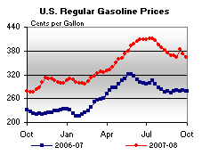 | 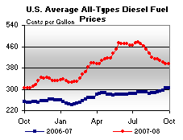 | ||||||
| Retail Data | Changes From | Retail Data | Changes From | ||||
| 09/29/08 | Week | Year | 09/29/08 | Week | Year | ||
| Gasoline | 363.2 | Diesel Fuel | 395.9 | ||||
| Spot Prices (Cents Per Gallon*) | |||||||||||||||||||||||||||||||||||
| 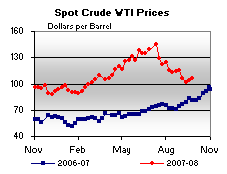 | 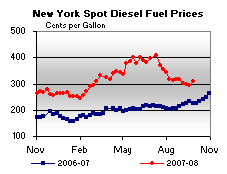 | ||||||||||||||||||||||||||||||||||
| 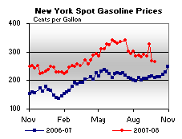 | 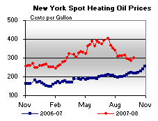 | ||||||||||||||||||||||||||||||||||
|
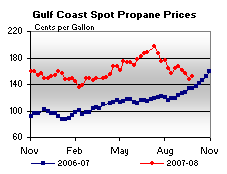 | ||||||||||||||||||||||||||||||||||
| *Note: Crude Oil WTI Price in Dollars per Barrel. | |||||||||||||||||||||||||||||||||||
| Stocks (Million Barrels) | |||||||
| 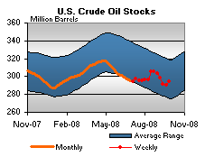 | 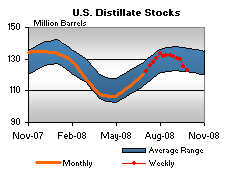 | ||||||
| 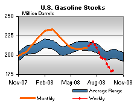 | 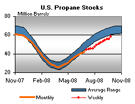 | ||||||
| Stocks Data | Changes From | Stocks Data | Changes From | ||||
| 09/26/08 | Week | Year | 09/26/08 | Week | Year | ||
| Crude Oil | 294.5 | Distillate | 123.1 | ||||
| Gasoline | 179.6 | Propane | 58.083 | ||||